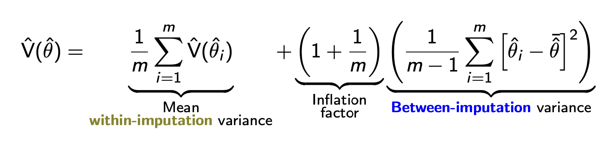

Missing data
This is a supplemental topic which in 2025 was covered in 212C (the quarter following 212B). Here are slides
Statistics classes often present examples in which all variables have valid values for all cases. But in practice, values are often missing in data used in social science research. This page introduces missing data and connects approaches to missing data to existing approaches you have already learned for causal inference.
Think carefully about data you don’t see
This section presents a historical account, drawing on Mangel and Samaniego (1984). Our use of this example is inspired by Joe Blitzstein’s presentation “The Soul of Statistics” at Harvard Thinks Big.
Abraham Wald (of Wald test fame) was born in 1902 in Austria-Hungary. As a Jewish statistician, he faced persecution from the Nazis and fled to the U.S. in 1938. As a statistical consultant to the U.S. Navy, he was tasked with an important question: where should reinforce the armor on planes used in battle?
The Navy presented Wald with data on planes that returned from battle, where it was possible to see where those planes had been hit by enemy fire. As a simplified example, suppose that many returning planes showed evidence of hits to the fuselage. A naive adviser might recommend reinforcing the planes’ armor around the fuselage.
Wald had a different insight: think carefully about the planes that did not return. For example, very few of the returning planes had a single hit to the engine. Did this mean that the engine was less likely to take enemy fire? No, instead Wald deduced that this implied that a single hit to the engine had a high likelihood of downing the plane—so that such a plane would never appear in the data.
The example of Wald’s analysis of planes illustrates a key concept in statistical analysis with missing data: one must carefully theorize why some data in the population may be missing in one’s analysis.
Missing at random: Exchangeability within subgroups
Because the MCAR assumption rarely holds, one might hope that a conditional version of this assumption holds: that missingness is independent of true values within subgroups of observed variables.
As a concrete example, suppose we now have a population of 6 people: 4 high school graduates and 2 non-graduates.
| Person ID | High school grad \(X\) | True Outcome \(Y\) | Missingness \(M_Y\) | Observed Outcome \(Y_\text{Observed}\) |
|---|---|---|---|---|
| 1 | 1 | 0 | 0 | 0 |
| 2 | 1 | 0 | 1 | NA |
| 3 | 1 | 1 | 0 | 1 |
| 4 | 1 | 1 | 1 | NA |
| 5 | 0 | 0 | 0 | 0 |
| 6 | 0 | 0 | 0 | 0 |
In this example, missingness is not independent of \(Y\): the employment rate is 25% among observed cases but 50% among missing cases. The overall rate of employment among the 6 people is 33%, but a researcher who analyzed only the observed outcomes would mistakenly conclude that the employment rate is 25%.
There is hope for the example above, however. Among high school graduates, the responders have the same employment rate as those who don’t respond. Among non-graduates, everyone responds. Thus, a conditional assumption known as missing at random holds.
Missing at random. Missingness is independent of true values, given observed values. In the univariate case, \(Y⫫ M_Y\mid X\). In the multivariate case, \(\vec{X}⫫ \vec{M}\mid \vec{X}_\text{Observed}\) where \(\vec{X}\) is a vector of variables and \(\vec{M}\) is a vector of missingness indicators on those variables, and \(\vec{X}_\text{Observed}\) is a vector of observed values.
When missing at random holds, it would be safe to
- stratify by \(X\)
- conduct analysis by listwise deletion
- re-aggregate over \(X\)
In math, we can carry out a proof using the missing at random assumption.
\[\begin{aligned} \text{E}(Y) &= \text{E}_X\bigg(\text{E}(Y\mid X)\bigg) &\text{law of iterated expectation} \\ &= \text{E}_X\bigg(\text{E}(Y\mid X, M_Y = 0)\bigg) &\text{missing at random assumption} \end{aligned}\]
where the second line can be estimated directly since we observe \(Y = Y_\text{Observed}\) for the non-missing cases (for whom \(M_Y = 0\)).
Connection to causal inference. The MAR assumption is identical to the conditional exchangeability assumption of invoked for causal inference.
\[ \underbrace{M ⫫ Y\mid X}_\text{Missing at Random} \qquad \underbrace{A⫫ Y^a\mid X}_\text{Conditional Exchangeability} \]
DAGs are also helpful for missing data. In the example above, we might assume that dependence between \(M_Y\) and \(Y\) arises because being a high school graduate (\(X\)) affects both. In this case, the only path connecting \(Y\) and \(M_Y\) is the path \(Y\leftarrow X\rightarrow M_Y\), which becomes blocked by conditioning on \(X\).
Swiss cheese missingness
In practice, researchers often face missingness on multiple variables, so that the dataset has holes in various places. We will refer to this as “Swiss cheese missingness” because the holes in the data are like a piece of Swiss cheese. If one analyzed these data with listwise deletion, only case 6 would remain since it is the only case with entirely valid values.
With Swiss cheese missingness, researchers often rely on a multivariate version of the Missing at Random assumption: a vector of missingness \(\vec{M}\) is independent of the true values of the variables \(\vec{X}\) given the observed values \(\vec{X}_\text{Observed}\).
It is very difficult to reason about when the multivariate MAR assumption holds. Using the simplified example below with only two variables, one would hope that
- \(M_Y\) is independent of \(Y\) conditional on \(X\)
- holds in the DAG below, where \(X\) blocks the only path \(Y\leftarrow X \rightarrow M_Y\) between \(Y\) and \(M_Y\)
- \(M_X\) is independent of \(X\) conditional on \(Y\)
- holds in the DAG below, where \(Y\) blocks the only path \(X\rightarrow Y \rightarrow M_X\) between \(X\) and \(M_X\)
In general, researchers almost never draw a missingness DAG like the one above. The assumptions are very difficult to satisfy, and with more than a few variables the DAG becomes intractably complicated. Thus, it is important to remember that the Missing at Random assumption in the setting of Swiss cheese missingness is a truly heroic assumption that we simply hope will hold.
Nonetheless, readers and reviewers are often more amenable to MAR than MCAR. You may also find that as a researcher, listwise deletion would remove so many observations that your analysis becomes impossible. Thus, many of us make a heroic MAR assumption and then proceed with a common empirical strategy that can be valid under MAR: multiple imputation.
Imputation of missing values
When the MAR assumption holds, one can model the conditional distribution of each variable as a function of all the other variables. When focusing on the \(p\)-th variable,
\[ X_p \mid X_{-p} \sim \text{a model} \] Then one can use the model to impute hypothetical values of \(X_p\) given its conditional distribution, using them to replace missing values.
\[ x^\text{Imputed}_{ip} = \begin{cases} x^\text{Observed}_{ip} &\text{if }M_{ip}=0 \\ \text{Draw from model for }X_p\mid X_{-p}=x_{i,-p}&\text{if }M_{ip}=1 \end{cases} \] One can then carry out analysis on the imputed data exactly as one would have if the full data had been observed. One can think of the entire process as falling within an estimator function, which is represented below in pseudocode.
estimator <- function(data) {
# Impute missing values with some impute() function
# from a software package for multiple imputation.
imputed <- impute(data)
# Apply a point estimtor that you write
estimate <- point_estimator(imputed)
return(estimate)
}Statistical uncertainty
Because imputation above is incorporated into an estimator function, you can assess statistical uncertainty by resampling methods in which the estimator() function is applied repeatedly to resampled datasets data^* such as via a bootstrap.
For practical purposes, the procedure above is a good one to choose. It works well regardless of whether there exists an analytical variance formula for your estimator. But for historical purposes, it is worthwhile to know about the most common approach to statistical uncertainty in current practice: Rubin’s rules.
Historical note: Rubin’s rules
A widely-used approach to statistical uncertainty was developed by Rubin (1987). In an era of limited computational resources, one might use the observed data to create a small number (e.g., 5) of imputed datasets. Then, one could conduct analysis on each of these and pool the point estimates and variances after the fact. For a target estimand \(\theta\), one could then produce imputation-specific point estimates \(\hat\theta_1,\dots,\hat\theta_5\) as well as within-imputation variance estimate \(\text{V}(\hat\theta_1),\dots,\text{V}(\hat\theta_5)\). As a point estimate, one would use the mean of the \(m\) imputation-specific estimates: \(\frac{1}{m}\sum_{i=1}^m \hat\theta_i\). The variance of this point estimate equal a combination of the average within-imputation variance and the between-imputation variance, which captures our uncertainty about the missing values.

Rubin’s rules are widely used. They work well in settings where each imputation-specific variance \(\text{V}(\hat\theta_i)\) can be estimated from an analytic formula. But when this within-imputation variance is going to be estimated by a bootstrap, Rubin’s rules would require you to repeat your bootstrap \(m\) times (once per imputation). For this reason and in favor of simplicity, I personally use the bootstrap strategy instead: carry out single imputation within an estimator function, with variance calculated by bootstrapping that estimator function.